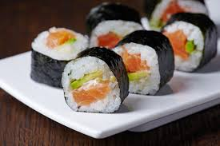
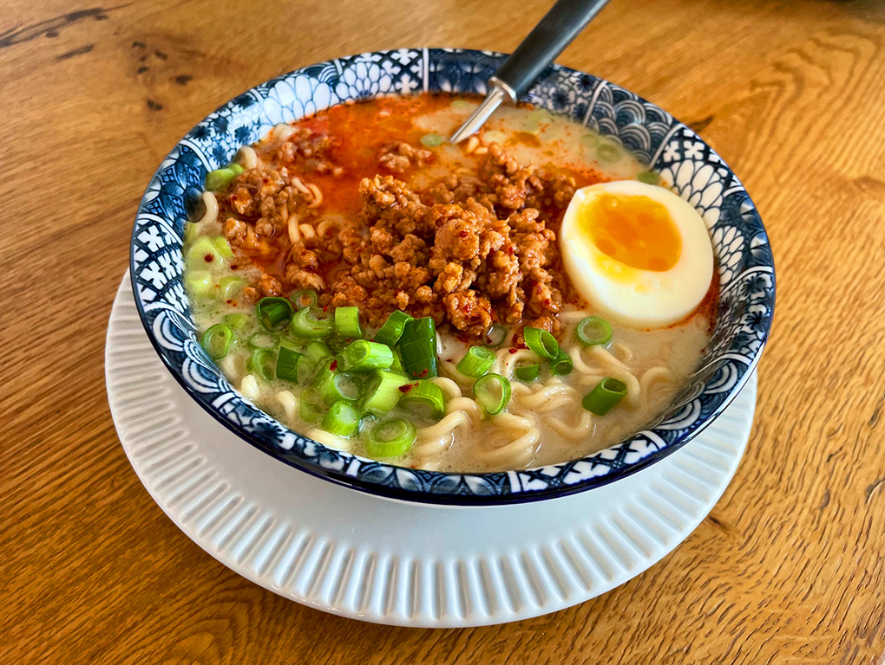
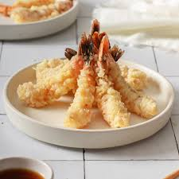
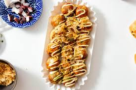

Mâncarea tradițională japoneză
Bucătăria japoneză este faimoasă pentru simplitatea, rafinamentul și echilibrul său nutritiv. Ea combină ingrediente naturale precum pește, orez, legume și soia într-un mod care respectă gustul autentic al fiecărui aliment.
Sushi
Sushi este, probabil, cel mai cunoscut preparat japonez. Se prepară din orez cu oțet, combinat cu pește crud, legume sau ou, înfășurat uneori în alge nori. Are un gust delicat și poate varia de la dulce la ușor sărat.
Ramen
Ramenul este o supă cu tăiței din grâu, carne (de obicei porc), ou, bambus, ceapă verde și supă concentrată. Gustul este intens, sărat și savuros. Fiecare regiune a Japoniei are propria versiune de ramen.
Tempura
Tempura constă în legume și fructe de mare prăjite rapid într-un aluat ușor. Este crocant la exterior și foarte moale în interior. Se servește cu sos de soia sau cu oțet de orez.
Takoyaki
Takoyaki sunt bile de aluat umplute cu caracatiță și gătite într-o formă specială. Se servesc cu sos dulce, maioneză japoneză și fulgi de pește uscat (katsuobushi).
Tabel comparativ cu mâncăruri japoneze
| Fel de mâncare | Ingrediente principale | Gust | Ocazie |
|---|---|---|---|
| Sushi | Orez, pește crud, alge | Ușor, delicat | Evenimente speciale, prânz |
| Ramen | Supă, tăiței, carne | Intens, umami | Cina, iarna |
| Tempura | Legume, fructe de mare | Crocant, ușor sărat | Gustare, fel principal |
| Takoyaki | Aluat, caracatiță | Dulce-sărat | Festivaluri, street food |
Deserturi Japoneze
- Mochi – prăjituri din orez glutinat, umplute cu pastă de fasole roșie
- Matcha ice cream – înghețată cu ceai verde matcha
- Dorayaki – clătite dulci cu pastă de fasole
Toate aceste preparate reflectă rafinamentul și echilibrul tradițional japonez. Mâncarea este nu doar gustoasă, ci și o formă de artă și respect față de ingrediente.
Toate aceste preparate reflectă rafinamentul și echilibrul tradițional japonez. Mâncarea este nu doar gustoasă, ci și o formă de artă și respect față de ingrediente.